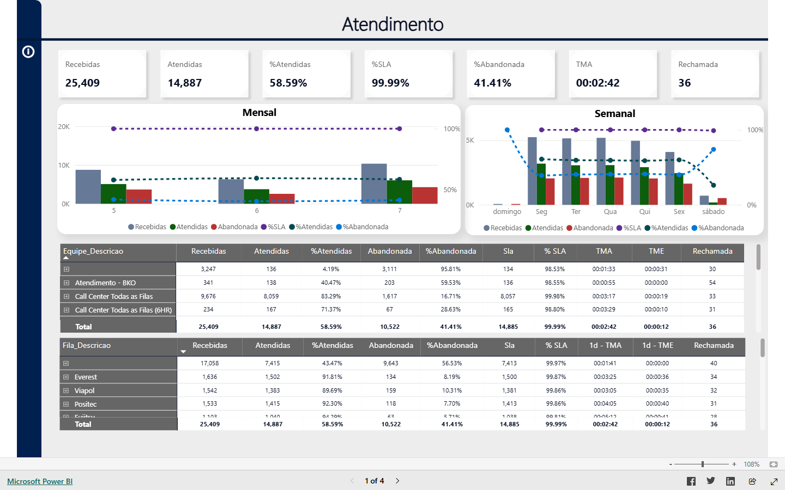

POWER BI
Power BI - Gestão de Transporte Urbano, Frota & Facilities
Power BI Interativo
Captura HD (Preservado)
Tela Cheia
Voltar ao Portfólio
Categoria:
Mobilidade Urbana & Infraestrutura •
Dashboard Power BI de alta densidade analítica: passageiros, curva horária de pico, índice IPK, consumo de diesel, energia elétrica (kWh), água e aluguel de garagens.
100% Preservado • Dados Fictícios
